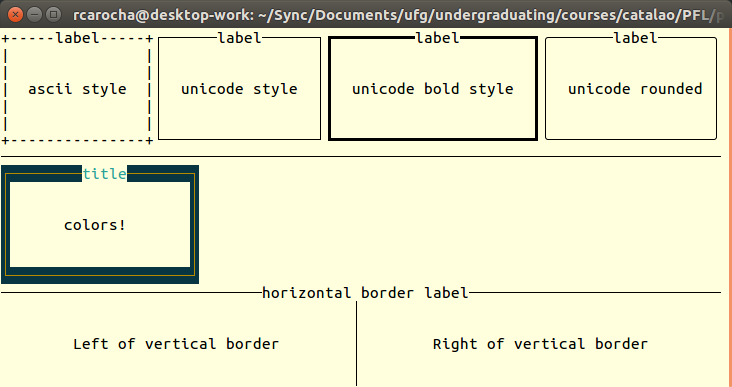
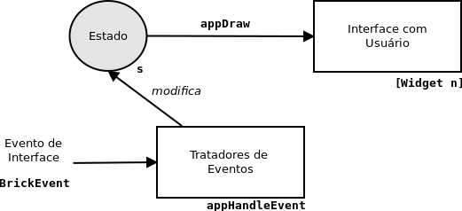
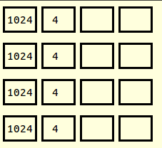

Programação Funcional e Lógica - Prof. Ricardo da Rocha
</p>
<h1>Introdução do Brick</h1>
<h2>Atualizações neste documento</h2>
<ul>
<li><strong>14/nov</strong>: primeira versão parcial, apenas para testar os pre-requisitos para uso do Brick</li>
<li><strong>15/nov</strong>: seção <code>Widget</code></li>
<li><strong>16/nov</strong>: seção <a href="#exemplo">Desenhando a Interface do 2048</a></li>
<li><strong>19/nov</strong>: seção <a href="#tratamento">Tratamento de Eventos e Interação de aplicação</a> e exemplo com 2048.</li>
</ul>
<h2>Visão Geral</h2>
<p><a href="http://hackage.haskell.org/package/brick">Brick</a> (<a href="https://github.com/jtdaugherty/brick">github</a>) é uma biblioteca Haskell para o desenvolvimento de interfaces baseadas no modo texto e executada em um terminal. Para exemplos de aplicações que utilizam o Brick, dê uma olhada na <a href="https://github.com/jtdaugherty/brick#featured-projects">página de exemplos</a> do projeto.</p>
<p>Esta página tem como objetivo servir de introdução ao uso do Brick para alunos que tem uma experiência mínima em Haskell, mas nenhuma experiência no uso de bibliotecas para interfaces de aplicações e outras questões que precisam ser compreendidas para desenvolver interfaces, como concorrência.
O conteúdo desta página está longe de ser completo: discutirei usos simples do Brick sempre considerando a nossa necessidade nos projetos de implementação. Em algumas partes, discutirei questões relacionadas a Haskell ou a outras bibliotecas, que são necessárias para usar o Brick e <strong>você não encontrará com facilidade</strong> em outro lugar. Para uma documentação completa, há duas referências para aprender a programar com Brick que são fundamentais:</p>
<ul>
<li><a href="https://github.com/jtdaugherty/brick/blob/master/docs/guide.rst">Brick User Guide</a>: guia do projeto, que explora toda as funcionalidades.</li>
<li><a href="https://github.com/jtdaugherty/brick/blob/master/docs/samtay-tutorial.md">Tutorial de Brick</a>: ótimo tutorial que mostra a implementação do jogo Snakes ("Cobrinha") usando Brick.</li>
</ul>
<p>Esta página não é para ser usada como uma referência, mas é para ser lida do inicio ao final. Quando necessário, colocarei links para outras referências para aqueles que precisarem de mais informação a respeito do Brick.</p>
<h2>Indice</h2>
<ul>
<li><a href="#requisitos">Requisitos</a></li>
<li><a href="#instalacao">Instalação</a></li>
<li><a href="#brick-stack">Configuração do Brick no Stack</a></li>
<li><a href="#import">Importação de Bibliotecas</a></li>
<li><a href="#arquitetura">Arquitetura de uma aplicação Brick</a></li>
<li><a href="#exemplo">Exemplo: Desenhando a Interface do 2048</a></li>
<li><a href="#tratamento">Tratamento de Eventos e Interação de aplicação</a></li>
<li><a href="#tratamento-2048">Tratamento de Eventos do 2048</a></li>
<li><a href="#execucao">Execução da Aplicação</a></li>
<li><a href="#core-brick">Core do Brick</a></li>
<li><a href="#attributemap">Mapa de Atributos <code>AttributeMap</code></a></li>
<li><a href="#representacao-texto">Representação de Texto</a></li>
<li><a href="#eventos-tempo">Tratando eventos de tempo</a></li>
<li><a href="#como-iniciar">Como iniciar o seu programa</a></li>
<li><a href="#dificuldade">Dificuldades e Dúvidas</a></li>
</ul>
<h3>Códigos Exemplo</h3>
<ul>
<li><a href="https://github.com/rcarocha/exemplo-brick/tree/v0.1">Interface não interativa para 2048</a> (versão v0.1 do código - use <code>git checkout tags/v0.1</code>)</li>
<li>Interface com exemplo de interação no código 2048 anterior </li>
</ul>
<p><a name="requisitos"> </a></p>
<h2>Requisitos</h2>
<p>Dois requisitos serão considerados neste documento:</p>
<ul>
<li>Utilizar <strong>stack</strong> para instalação, criação de aplicações e manipulação de pacotes.</li>
<li>Brick é dependente da biblioteca <a href="http://hackage.haskell.org/package/vty">vty</a> para construção de interfaces baseadas textuais baseada em terminal. Por este motivo, Brick <strong>só funcionará</strong> em um terminal Unix/Linux/MacOS. Portanto, ele não funcioná no Windows, a priori e não recomendo que tentem.</li>
</ul>
<p><a name="instalacao"> </a></p>
<h2>Instalação</h2>
<p>Para instalação recomendada da biblioteca no ambiente Haskell, você deve usar o seguinte comando <strong>stack</strong>.</p>
<pre><code> stack install brick
</code></pre>
<p>Durante a instalação, ao compilados e armazenados no diretório <code>&lt;diretorio-usuario&gt;/.local/bin</code>, diversos programas simples de demonstração da biblioteca. Eles são muito úteis para entender funcionalidades da biblioteca em códigos mais simples. Esses programas ficam no PATH do seu ambiente, então você provavelmente conseguirá executá-los digitando diretamente o nome deles:</p>
<pre><code> - brick-attr-demo
- brick-border-demo
- brick-cache-demo
- brick-custom-event-demo
- brick-dialog-demo
- brick-dynamic-border-demo
- brick-edit-demo
- brick-fill-demo
- brick-form-demo
- brick-hello-world-demo
- brick-layer-demo
- brick-list-demo
- brick-list-vi-demo
- brick-markup-demo
- brick-mouse-demo
- brick-padding-demo
- brick-progressbar-demo
- brick-readme-demo
- brick-suspend-resume-demo
- brick-text-wrap-demo
- brick-theme-demo
- brick-viewport-scroll-demo
- brick-visibility-demo
</code></pre>
<p>Por exemplo, o programa <code>brick-border-demo</code> (código compilado) demonstra a criação de diversas áreas textuais com diferentes tipos de bordas e texto, como mostrado na figura abaixo. </p>
<p></p>
<p>Não há nenhuma interação. É apenas uma demonstração de como construir alguns componentes da interface no Brick. Ela só é util com o seu código fonte, que <a href="https://github.com/jtdaugherty/brick/blob/master/programs/BorderDemo.hs">está disponível aqui</a>.</p>
<p>A relação do código-fonte de todos esses demos estão em <a href="https://github.com/jtdaugherty/brick/tree/master/programs">https://github.com/jtdaugherty/brick/tree/master/programs</a> (ou <a href="http://hackage.haskell.org/package/brick-0.50/src/programs/">aqui</a>).</p>
<p>Se após a instalação, você não for capaz de executar nenhum desses programas-exemplo, então há algum problema com a sua instalação e você deve corrigi-lo antes de ir em frente.</p>
<p><a name="brick-stack"> </a></p>
<h2>Configuração do Brick no seu Pacote Stack</h2>
<p>O segundo passo é construir um programa Brick e verificar se você é capaz de compilá-lo e executá-lo no stack. Recomendo que você pegue o fonte de algumas das demonstrações acima e utilize no seu projeto stack (<code>Main.hs</code>). Quando você for capaz de compilar e executar o código com sucesso, então passe para a próxima seção deste documento.</p>
<p>Considerando que o seu projeto stack já foi criado e a função <code>main</code> está em <code>app/Main.hs</code>, siga os seguintes passos para configurar o seu projeto:</p>
<ol>
<li><p>Adicione em <code>package.yaml</code> as bibliotecas necessárias para compilação e execução do seu projeto, na seção <code>executables/dependencies</code>. Tipicamente, serão necessárias as bibliotecas <code>brick</code> e <code>vty</code>, mas pode ser necessário o acréscimo de mais bibliotecas de acordo com a aplicação. Por exemplo, no caso do <code>brick-border-demo</code>, precisei incluir <code>text</code> quando tive o seguinte erro de compilação referente a <code>import Data.Text</code>.</p>
<pre><code>/home/rcarocha/workspace/brick/exemplo-brick-ui/app/Main.hs:11:1: error:
Could not load module 'Data.Text'
It is a member of the hidden package 'text-1.2.3.1'.
Perhaps you need to add 'text' to the build-depends in your .cabal file.
Use -v to see a list of the files searched for.
|
11 | import qualified Data.Text as T
| ^^^^^^^^^^^^^^^^^^^^^^^^^^^^^^^
</code></pre></li>
<li><p>Adicione em <code>package.yaml</code> na seção <code>executables/ghc-options</code> as seguintes diretivas de compilação (caso não existam): <code>-threaded</code> e <code>-XCPP</code>. Observe que o arquivo deveria ficar nesta seção da seguinte maneira:</p>
<pre><code>executables:
exemplo-brick-ui-exe:
main: Main.hs
source-dirs: app
ghc-options:
- -threaded
- -XCPP
- -rtsopts
- -with-rtsopts=-N
dependencies:
- brick
- vty
- exemplo-brick-ui
</code></pre></li>
</ol>
<p><a name="import"> </a></p>
<h2>Importação de Bibliotecas e outras Construções Haskell</h2>
<p>Você encontrará com frequência usos mais complexos de importação de bibliotecas nos códigos daqui para frente. Considere o seguinte trecho de código Haskell:</p>
<pre><code> import Brick.Types
( Widget
)
import qualified Brick.AttrMap as A
</code></pre>
<p>Na importação de <code>Brick.Types</code> a colocação em parênteses de funções ou tipos, indica qual o conteúdo da biblioteca que ficará visível no seu código o que permite perceber quais são os tipos e funções dos quais o seu código depende para funcionar. Isso aumenta a legibilidade do código. </p>
<p>A importação com o modificador <code>qualified</code> permite associar um apelido ao módulo em questão. No caso do módulo <code>Brick.AttrMap</code> será chamado no código simplesmente por <code>A</code>. Então, se no código você encontrar <code>A.attrMap</code> significa que você está referenciando a função <code>Brick.AttrMap.attrMap</code>. Se você quiser obter a documentação dessa função, basta procurar da documentação de <a href="http://hackage.haskell.org/package/brick-0.50/docs/Brick-AttrMap.html"><code>Brick.AttrMap</code></a> (está <a href="http://hackage.haskell.org/package/brick-0.50/docs/Brick-AttrMap.html#v:attrMap">aqui</a>).</p>
<p>Em alguns códigos você poderá encontrar <code>const</code>, por exemplo <a href="https://github.com/jtdaugherty/brick/blob/b3bec0808840079f3606346a26fbdf80fe8318e4/programs/ListDemo.hs#L98">nesta linha de código</a>. <code>const</code> é usada quando precisamos passar como parâmetro uma função que retorna algum valor, mas que naquela situação queremos que o valor de retorno sempre seja um dado particular (e constante). A função <code>const</code> ignora sempre o segundo parâmetro e retorna o primeiro, podendo ser usado neste caso, evitando que a gente crie uma nova função só para o propósito de passagem de parâmetros (ou que evite usar função anônima). <a href="http://hackage.haskell.org/package/base-4.12.0.0/docs/Data-Function.html#v:const">Documentação de <code>const</code></a>.</p>
<h3>Identificando as Bibliotecas Necessárias</h3>
<p>Para identificar os bibliotecas Brick necessárias ao seu código, sugiro olhar os códigos exemplos do Brick ou na <a href="http://hackage.haskell.org/package/brick">documentação do pacote</a>.</p>
<!--
# Guias
## Entendendo lens
* <http://hackage.haskell.org/package/lens-tutorial-1.0.4/docs/Control-Lens-Tutorial.html>
* [Arquitetura de uma aplicação Brick](#arquitetura)
* [Exemplo em 2048](#exemplo)
* [Execução da Aplicação](#execucao)
* [Desenhando a Interface da Aplicação: `appDraw`](#appdraw)
* [Core do Brick](#core-brick)
* [Mapa de Atributos `AttributeMap`](#attributemap)
* [Representação de Texto](#representacao-texto)
* [Como iniciar do seu programa](#como-iniciar)
* [Tratando eventos de tempo](#eventos-tempo)
* [Dificuldades e Dúvidas](#dificuldade)
<a name="requisitos"> </a>
-->
<p><a name="arquitetura"> </a></p>
<h2>Arquitetura de uma aplicação Brick</h2>
<p>Brick utiliza uma arquitetura que separa claramente interface com o usuário, o estado da aplicação e o tratamento de eventos, nos três elementos indicados na figura abaixo. </p>
<p></p>
<p>O <strong>Estado</strong> corresponde aos dados (de um tipo em particular) que representam o estado da sua aplicação, ou tudo que não é interface gráfica. Por exemplo, se você está implementando um jogo de xadrez, o estado provavelmente será uma estrutura de dados (matriz) que representa todas as posições do tabuleiro e o posicionamento das peças.</p>
<p>Uma aplicação Brick deve fornecer uma função indicada na figura como <strong><code>appDraw</code></strong> que, dado um estado da aplicação, desenha todos os componentes gráficos (interface) que representa aquele estado. Em um jogo de xadrez, essa função desenharia o tabuleiro e cada uma das peças na sua respectiva posição. Essa função retornar uma lista de Widgets (<code>[Widget n]</code>, ver <a href="#widget">respectiva seção</a>) que implementam cada componente gráfico, e que são fornecidos na biblioteca Brick. </p>
<p>Por fim, o(s) tratador(es) de evento(s) é uma função que é chamada no laço de execução do Brick toda vez que ocorre um evento da interface, como um movimento de mouse ou uma tecla pressionada. O tratador de evento, por sua vez, identifica o evento ocorrido e realiza a mudança no estado da aplicação a ele associado. Uma vez que ocorre essa mudança, o Brick se encarrega de redesenhar a interface. </p>
<p>Essa arquitetura está discutida na <a href="https://github.com/jtdaugherty/brick/blob/master/docs/guide.rst#the-app-type">documentação do Brick</a> na forma de um tipo aplicação, assim descrito:</p>
<pre><code> data App s e n =
App { appDraw :: s -&gt; [Widget n]
, appChooseCursor :: s -&gt; [CursorLocation n] -&gt; Maybe (CursorLocation n)
, appHandleEvent :: s -&gt; BrickEvent n e -&gt; EventM n (Next s)
, appStartEvent :: s -&gt; EventM n s
, appAttrMap :: s -&gt; AttrMap
}
</code></pre>
<p>O tipo <a href="http://hackage.haskell.org/package/brick-0.50/docs/Brick-Main.html"><code>App</code></a> é parametrizado por três tipos: <code>s</code>, <code>e</code> e <code>n</code>. Esse tipos são usados para definir a interface das funções e dados que compõem a aplicação. Esses parâmetros têm o seguinte significado:</p>
<ol>
<li><strong><code>s</code></strong>: Um tipo que contém o estado da aplicação, que descreve o estado durante a execução da aplicação. Mudar o estado da aplicação deverá causar a mudança na interface do programa.</li>
<li><strong><code>e</code></strong>: Os tipos que descrevem os eventos personalizados que a sua aplicação precisa produzir e tratar, quando são necessários.</li>
<li><strong><code>n</code></strong>:: Os tipos de recursos usados na sua aplicação, que descrevem o estado de todos os componentes da interface, com o qual você pode recuperar, por exemplo, a posição de um botão na tela. <em>Não irei explorar esse componente neste documento</em>.</li>
</ol>
<p>Os componentes da estrutura <code>App</code> são os seguintes:</p>
<ul>
<li><code>appDraw</code>: a função que <strong>desenha</strong> a interface da aplicação</li>
<li><code>appChooseCursor</code>: função que manipula o posicionamento do cursor, que <em>não será discutido neste documento</em>.</li>
<li><code>appHandleEvent</code>: a função <strong>tratador de eventos</strong>.</li>
<li><code>appStartEvent</code>: o evento inicial da aplicação, quando ela é iniciada.</li>
<li><code>appAttrMap</code>: um mapa de atributos, discutidos mais tarde.</li>
</ul>
<p>A declaração de <code>App</code> faz parte da biblioteca Brick. O desenvolvimento de uma aplicação envolve criar um dado do tipo <code>App</code>, indicando os respectivos tipos nos seus parâmetros e inicializando os seus atributos.</p>
<p><a name="widget"> </a></p>
<h2>Widget</h2>
<p>Um <code>Widget</code> é um componente gráfico de uma interface com usuário, como botão, caixas de texto e lista. Uma interface é construída com a composição de widgets gráficos disponíveis em uma biblioteca. </p>
<p>Na função <code>appDraw</code>, o programador especifica como a interface da aplicação será construída na forma dos widgets que fazem parte dela. A função retorna uma lista de widgets (<code>[Widget n]</code>) que especifica uma lista de <em>camadas</em> (layers) de widgets que fazem parte da interface, permitindo a um widget ficar total ou parcialmente sobre outro widget. Um widget pode ainda ser formato por vários widgets. A função <code>appDraw</code> é avaliada no laço principal de eventos do Brick, assim que a aplicação executa, e é chamada continuadamente, sempre que o estado da aplicação é modificado. Mesmo que algum elemento da interface não seja visível em determinado momento, o seu código não precisa se preocupar com isso: a biblioteca <code>vty</code>, na qual o Brick é baseado, faz todo o trabalho de determinar qual parte do terminal precisa ser atualizado e qual não precisa. </p>
<p>Ao criar um <code>Widget</code>, o visual da sua aplicação dependerá do tamanho do terminal e dos atributos do <code>Widget</code> (por exemplo, se ele tem um tamanho fixo). É recomendável que você use os combinadores de layout como <code>Brick.Widgets.Core.vBox</code> ou <code>Brick.Widgets.Center.center</code> para determinar com você deseja distribuir os componentes no terminal.</p>
<ul>
<li>Funções para desenho de Widgets: <a href="http://hackage.haskell.org/package/brick-0.50/docs/Brick-Widgets-Core.html"><code>Brick.Widgets.Core</code></a></li>
</ul>
<p><a name="exemplo"> </a></p>
<h2>Exemplo: Desenhando a Interface do 2048</h2>
<p>A partir daqui colocarei exemplos de uso do Brick baseados na tarefa do jogo 2048. Na maioria das seções, incluirei discussões simplificadas sobre a aplicação dos conceitos nesse exemplo. Todo o código está no projeto gihub <a href="https://github.com/rcarocha/exemplo-brick">https://github.com/rcarocha/exemplo-brick</a> na forma de um projeto stack.</p>
<p>Iniciaremos criando elementos gráficos que representem o conteúdo do jogo 2048, o que é bastante simples: uma grade 4x4 onde é possível colocar números de 2 a 2048 em cada posição (espaço para 4 caracteres). Criaremos um <code>Widget</code> que contém quatro elementos alinhados verticalmente com o operador <code>&lt;=&gt;</code> e cada elemento será um conjunto de elementos <code>botaoNumero Int</code> organizados horizontalmente com a função <code>hBox</code>.</p>
<p>A função <code>botaoNumero</code>criar um widget de caixa de texto sem título e com conteúdo igual ao número passado como parâmetro (cria uma caixa sem texto, quando parâmetro é <code>-1</code>). </p>
<pre><code> ui :: Widget ()
ui =
hBox [botaoNumero 1024, botaoNumero 4, botaoNumero (-1), botaoNumero (-1)]
&lt;=&gt; hBox [botaoNumero 1024, botaoNumero 4, botaoNumero (-1), botaoNumero (-1)]
&lt;=&gt; hBox [botaoNumero 1024, botaoNumero 4, botaoNumero (-1), botaoNumero (-1)]
&lt;=&gt; hBox [botaoNumero 1024, botaoNumero 4, botaoNumero (-1), botaoNumero (-1)]
</code></pre>
<p>Quando executada, a seguinte saída é exibida no terminal.</p>
<p></p>
<p><code>ui</code> apenas determina a disposição dos widgets. A criação de cada widget é feita no seguinte código:</p>
<pre><code> botaoNumero :: Integer -&gt; Widget ()
botaoNumero numero =
withBorderStyle BS.unicodeBold $
vLimit 3 $
hLimit 6 $
B.borderWithLabel (str "") $
C.vCenter $
C.center $
txt $ T.pack $ show numero
</code></pre>
<p>A função encadeia chamadas que contróiem o widget conforme a intenção. Recorra à documentação de cada método para compreender o seu objetivo, quanto não estiver evidente. No <a href="https://github.com/rcarocha/exemplo-brick/blob/master/app/Main.hs">código fonte</a> há comentários adicionais sobre o funcionamento. Experimente faz modificações no código e observar o resultado na interface.</p>
<p>O código <a href="https://github.com/rcarocha/exemplo-brick/blob/master/app/Main.hs"><code>Main.hs</code></a> <strong>não segue</strong> a arquitetura de aplicações Brick discutida anteriormente. Como o objetivo do código é apenas mostrar a criação de elementos gráficos, ele apenas exibe os elementos no terminal, sem qualquer tipo de interação com o usuário ou definição do estado da aplicação. Faremos isso nas próximas discussões sobre essa implementação.</p>
<p>Uma preocupação adicional que você deve ter todo código Brick é a representação de texto, para qual você não poderá usar diretamente Strings Haskell. No caso de strings simples, é necessário usar o método <code>str</code> e no caso de texto, usar o método <code>Data.Text.pack</code>.</p>
<p>Este código é baseado no exemplo <a href="https://github.com/jtdaugherty/brick/blob/master/programs/BorderDemo.hs"><code>brick-border-demo</code></a>.</p>
<p><a name="tratamento"> </a></p>
<h2>Tratamento de Eventos e Interação de aplicação</h2>
<p>Para implementar a interação da sua aplicação é preciso construir um programa que seja aderente à <a href="#arquitetura">arquitetura apresentada anteriormente</a>, definindo os atributos da aplicação </p>
<ul>
<li><code>appHandleEvent</code>: tratador de eventos</li>
<li><code>appStartEvent</code>: evento inicial da aplicação</li>
</ul>
<p>O tratador de eventos <code>appHandleEvent</code> é chamado pelo Brick (no seu laço de execução) sempre quando um evento ocorre, e a sua estrutura é a de um case, indicando o que deve ser feito em termos de mudança no estado da aplicação (parâmetro <code>s</code> do tipo aplicação) de acordo com cada evento que ocorre. </p>
<p>O programa <a href="https://github.com/jtdaugherty/brick/blob/master/programs/ListDemo.hs">brick-list-demo</a> é um bom exemplo de tratamento de eventos e iremos utilizá-lo como referência. <strong>Execute</strong> o programa para entender a interação que é feita com o usuário. Observe a estrutura da aplicação desse exemplo e compare com a estrutura esperada discutida na seção <a href="#arquitetura">Arquitetura de uma aplicação Brick</a> </p>
<pre><code> theApp :: M.App (L.List () Char) e ()
theApp =
M.App { M.appDraw = drawUI
, M.appChooseCursor = M.showFirstCursor
, M.appHandleEvent = appEvent
, M.appStartEvent = return
, M.appAttrMap = const theMap
}
</code></pre>
<p>O estado da aplicação é definido pelo conteúdo do componente <code>L.List</code> em <code>(L.List () Char)</code> que é um widget (isso não é a solução adequada, mas esse exemplo não está preocupado com esse aspecto). Não há uma lista de recursos usados (por isso <code>()</code>) e o evento parametrizado é simplesmente chamado de <code>e</code>. A declaração de <code>appEvent</code> indica o primeiro parâmetro é o tipo estado da aplicação (consistente com a declaração de <code>theApp</code>), o segundo parâmetro é um tipo de evento do Brick, referenciado por <code>e</code> e o retorno é um tipo de evento aplicado ao estado da aplicação.</p>
<pre><code> appEvent :: L.List () Char -&gt; T.BrickEvent () e -&gt; T.EventM () (T.Next (L.List () Char))
</code></pre>
<p>O corpo da função, que provavelmente será seguido por qualquer outra implementação, é um case, indicando o que deve ser feito para cada evento. Neste caso, a aplicação responde a três tipos de eventos:</p>
<ul>
<li>Clique no caractere <code>'+'</code>: indicado por <code>V.EvKey (V.KChar '+')</code>, quando então é inserido um novo elemento na lista, e ele retorna o evento <code>M.continue</code>, para continuar o laço do Brick com o novo estado da lista.</li>
<li>Clique no caractere <code>'-'</code>: indicado por <code>V.EvKey (V.KChar '-')</code>, quando então é removido um elemento da lista, e ele retorna o evento <code>M.continue</code>, para continuar o laço do Brick com o novo estado da lista.</li>
<li>Clique na tecla <code>Esc</code>: indicado por <code>V.EvKey V.KEsc</code>, quando então o programa deve terminar. Neste caso, ele retorna o evento <code>M.halt</code> (término da aplicação) e o estado <code>l</code>.</li>
</ul>
<p>O <a href="https://github.com/jtdaugherty/brick/blob/aefa0ed7c2a3cbf3f98ab3a71decefdbc798e56c/programs/ListDemo.hs#L51">código seguinte</a> implementa essa lógica de tratamento de eventos.</p>
<p>Em qualquer outro caso de evento <code>T.VtyEvent</code>, é enviado o evento <code>M.continue</code> para o tratador de eventos. Qualquer outro tipo de evento é ignorado (na declaração <code>appEvent l _</code>).</p>
<pre><code> appEvent l (T.VtyEvent e) =
case e of
V.EvKey (V.KChar '+') [] -&gt;
let el = nextElement (L.listElements l)
pos = Vec.length $ l^.(L.listElementsL)
in M.continue $ L.listInsert pos el l
V.EvKey (V.KChar '-') [] -&gt;
case l^.(L.listSelectedL) of
Nothing -&gt; M.continue l
Just i -&gt; M.continue $ L.listRemove i l
V.EvKey V.KEsc [] -&gt; M.halt l
ev -&gt; M.continue =&lt;&lt; L.handleListEvent ev l
where
nextElement :: Vec.Vector Char -&gt; Char
nextElement v = fromMaybe '?' $ Vec.find (flip Vec.notElem v) (Vec.fromList ['a' .. 'z'])
appEvent l _ = M.continue l
</code></pre>
<p>Entender todos os eventos, exige olhar a documentação do Brick. Pelos exemplos é possível entender onde iniciar. Utilize este código, ou de outro exemplo, como esqueleto e construa o seu próprio tratador de eventos.</p>
<p><a name="tratamento-2048"> </a></p>
<h2>Tratamento de Eventos do 2048</h2>
<p>Continuando o exemplo anterior, fizemos um pequeno ajuste do estado da aplicação, que agora é simplesmente <code>[[Integer]]</code>, ou uma lista de lista dos valores em cada posição do jogo. A estrutura da aplicação ficou da seguinte maneira:</p>
<pre><code> aplicacao2048 :: M.App [[Integer]] e ()
aplicacao2048 =
M.App { M.appDraw = desenhaUI
, M.appChooseCursor = M.showFirstCursor
, M.appHandleEvent = tratadorEventos
, M.appStartEvent = return
, M.appAttrMap = mapaDeAttributos
}
</code></pre>
<p>A função <code>desenhaUI</code> recebe <code>[[Integer]]</code> e desenha a interface, tal como feito na versão anterior deste código. O tratador de eventos é a função <code>tratadorEventos</code> que contém a seguinte implementação:</p>
<pre><code> tratadorEventos :: [[Integer]] -&gt; BT.BrickEvent () e -&gt; BT.EventM () (BT.Next [[Integer]])
tratadorEventos [[ pos0, pos1, pos2, pos3],
[ pos4, pos5, pos6, pos7],
[ pos8, pos9, pos10, pos11],
[pos12, pos13, pos14, pos15]] (BT.VtyEvent e) =
case e of
V.EvKey (V.KChar 'a') [] -&gt;
M.continue [[ (-1), pos1, pos2, pos3],
[ (-1), pos5, pos6, pos7],
[ (-1), pos9, pos10, pos11],
[ (-1), pos13, pos14, pos15]]
V.EvKey (V.KChar 's') [] -&gt;
M.continue [[ pos0, pos1, 2, pos3],
[ pos4, pos5, pos6, pos7],
[ pos8, pos9, pos10, pos11],
[(-1), (-1), (-1), (-1)]]
V.EvKey (V.KChar 'd') [] -&gt;
M.continue [[ pos0, pos1, pos2, (-1)],
[ pos4, pos5, pos6, (-1)],
[ pos8, pos9, pos10, (-1)],
[pos12, pos13, pos14, (-1)]]
V.EvKey (V.KChar 'w') [] -&gt;
M.continue [[ (-1), (-1), (-1), (-1)],
[ pos4, pos5, pos6, pos7],
[ pos8, pos9, pos10, pos11],
[pos12, pos13, pos14, pos15]]
V.EvKey V.KEsc [] -&gt; M.halt [[ pos0, pos1, pos2, pos3],
[ pos4, pos5, pos6, pos7],
[ pos8, pos9, pos10, pos11],
[pos12, pos13, pos14, pos15]]
ev -&gt; M.continue [[ pos0, pos1, pos2, pos3],
[ pos4, pos5, pos6, pos7],
[ pos8, pos9, pos10, pos11],
[pos12, pos13, pos14, pos15]]
tratadorEventos estadoJogo2048 _ = M.continue estadoJogo2048
</code></pre>
<p>Procure entender o que o programa irá fazer apenas olhando esse tratador de eventos (spoiler: não é o jogo ainda) e então <a href="https://github.com/rcarocha/exemplo-brick/">baixe o código e o execute</a>.</p>
<!-- ***** CORRENTE ***** -->
<!--
# Execução da Aplicação
# Desenhando a Interface da Aplicação: appDraw
https://github.com/jtdaugherty/brick/blob/master/docs/guide.rst#appdraw-drawing-an-interface
camadas de Widgets, daquele que fica mais no topo àquele que fica no fundo
[]
The Widget type is the type of drawing instructions. The body of your drawing function will use one or more drawing functions to build or transform Widget values to describe your interface.
* The size of the terminal: the size of the terminal determines how many Widget values behave. For example, fixed-size Widget values such as text strings behave the same under all conditions (and get cropped if the terminal is too small) but layout combinators such as Brick.Widgets.Core.vBox or Brick.Widgets.Center.center use the size of the terminal to determine how to lay other widgets out. See How Widgets and Rendering Work.
* The application's attribute map (appAttrMap): drawing functions requesting the use of attributes cause the attribute map to be consulted. See How Attributes Work.
* The state of scrollable viewports: the state of any scrollable viewports on the previous drawing will be considered. For more details, see Viewports.
# Core do Brick
http://hackage.haskell.org/package/brick-0.50/docs/Brick-Widgets-Core.html#g:3
passar em diversos elementos e documentar
# Mapa de Atributos AttributeMap
explicação principal aqui.
https://github.com/jtdaugherty/brick/blob/master/docs/guide.rst#appattrmap-managing-attributes
https://github.com/jtdaugherty/brick/blob/master/docs/guide.rst#the-attribute-map
# Representação de Texto
Data.Text http://hackage.haskell.org/package/text-1.2.4.0/docs/Data-Text.html
-->
<p><a name="execucao"> </a></p>
<h2>Execução da Aplicação</h2>
<!--
<a name="appdraw"> </a>
## Desenhando a Interface da Aplicação: `appDraw`
-->
<p><a name="core-brick"> </a></p>
<h2>Core do Brick</h2>
<p><a name="attributemap"> </a></p>
<h2>Mapa de Atributos <code>AttributeMap</code></h2>
<p><a name="representacao-texto"> </a></p>
<h2>Representação de Texto</h2>
<p><a name="eventos-tempo"> </a></p>
<h2>Tratando eventos de tempo</h2>
<p><a name="como-iniciar"> </a></p>
<h2>Como iniciar</h2>
<p>Minha sugestão é que você inicie o seu código da seguinte maneira:</p>
<ol>
<li>Crie um projeto Haskell Stack, a partir de um exemplo e certifique-se de que você consegue compilar e executar.</li>
<li>Experimentar a construção de interfaces: inicie com exemplos mais simples possíveis e acrescente outros elementos para verificar o seu comportamento. <code>brick-border-demo</code> é um ótimo exemplo para iniciar. Observe que ele não constrói uma aplicação Brick completa (com estado e interação), mas apenas desenha os elementos da interface. </li>
<li>Faça um protótipo da sua interfac, o mais próximo do que você precisa funcionalmente, mas sem preciosismos gráficos.</li>
<li>Continue organizando a estrutura da sua solução de acordo com o modelo do Brick, incluindo a interação com usuário. Sugiro inicia com um exemplo de interação mais simples, como <code>brick-list-demo</code>, entenda como funciona, teste com os eventos de interação que precisa, e só então tente incorporá-los da sua aplicação. </li>
<li>Guarde versões intermediárias do seu código no git, antes de fazer mudanças grandes. Mantenha no git sempre uma versão que funciona, mesmo que muito incompleta.</li>
</ol>
<p><a name="dificuldade"> </a></p>
<h3>Dificuldades e Dúvidas</h3>
<p>Não dá para descrever tudo neste documento e nem é adequado. Já existe documentação para tudo e tentar criar uma documentação completa apenas irá ajudar a vocês se perderem ou se confundirem com prováveis inconsistências entre esse documento e os documentos originais.</p>
<p>Eu procurei escrever esse documento de acordo com a experiência na linguagem que vocês possuem, incluindo discussões que as vezes nem fazem parte da biblioteca mas que serão úteis para compreender o seu funcionamento. </p>
<p>Antes de mais nada, em qualquer código, é fundamental que compreendam tudo que está ocorrendo, considerando a filosofia de Haskell e de Brick. Copiar e colar um código que "funciona" mas você não sabe porquê, ou que não sabe o que faz mas vi em outro código, é caminho provavel para que, em certo ponto da sua implementação, tudo pare de funcionar de maneira irreparável. </p>
<p>Se tiver dificuldade em compreender algum conteúdo e os códigos que produzirem ficarem inconsistentes por um motivo que vocês não compreendem, entrem em contato. </p>
<p>Procure descrever claramente o que precisa, o que entende e o que não entende, e me envie uma pergunta, possivelmente com exemplo de código.</p>
<!--
# Tratando eventos de tempo
usando próprio evento e manpulação de bchan
https://github.com/jtdaugherty/brick/blob/master/docs/guide.rst#using-your-own-event-type
exemplo feito no Snake
https://github.com/jtdaugherty/brick/blob/master/docs/samtay-tutorial.md#custom-events
http://hackage.haskell.org/package/base-4.12.0.0/docs/Control-Concurrent.html
forever
http://hackage.haskell.org/package/base-4.12.0.0/docs/Control-Monad.html
http://hackage.haskell.org/package/base-4.12.0.0/docs/Control-Monad.html#v:forever
forkIO
http://hackage.haskell.org/package/base-4.12.0.0/docs/Control-Concurrent.html#v:forkIO
-->
<p>